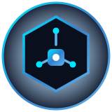

ECOSISTEMA DE SERVICIOS IT
Informáticos Venezuela
Red Nacional de Soporte Técnico Especializado & Help Desk
"En Informáticos Venezuela contamos con personal técnico capacitado con el más alto estándar en tecnología con la capacidad de solventar cualquiera de sus requerimientos"
👤
¿Eres Solicitante?
Crea un Ticket Help Desk, reporta fallas en tus equipos o redes y recibe asistencia técnica con asignación directa.
⚡
¿Eres Técnico IT?
Únete a la Red Profesional de Informáticos Venezuela Help Desk. Recibe órdenes asignadas por el Administrador y gestiona tus servicios.
Dominio Técnico Especializado
24 Especialidades IT Profesionales
💻 PC & Laptops (Windows)
🍏 Apple & macOS (MacBook)
📡 Redes WiFi & Switching
📹 CCTV, Cámaras & NVR
🐧 Linux & Servidores
🖥️ Windows Server & AD
☁️ Cloud, VPS & Hosting
🛡️ Ciberseguridad & VPN
🔌 Cableado & Fibra Óptica
🖨️ Impresoras & Escáneres
⚡ Energía, UPS & Inversores
💾 Backup & Recuperación
🌐 Desarrollo Web & Tiendas
⚙️ Desarrollo Software & APIs
🗄️ Bases de Datos SQL/NoSQL
📱 Móviles Android & iOS
📦 Virtualización & Docker
🔒 Antivirus & Malware
📞 Telefonía IP & PBX VoIP
🔧 Mantenimiento Físico
🤖 Inteligencia Artificial
💳 Sistemas POS & Caja
🎮 PC Gaming & Workstations
🛠️ Soporte Help Desk SAT
Sistemas y Proyectos
Ecosistema de plataformas y desarrollos tecnológicos de Informáticos Venezuela.
Contacto Directo
Comunícate directamente por mis canales oficiales.